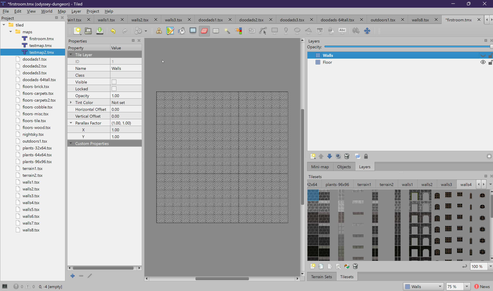
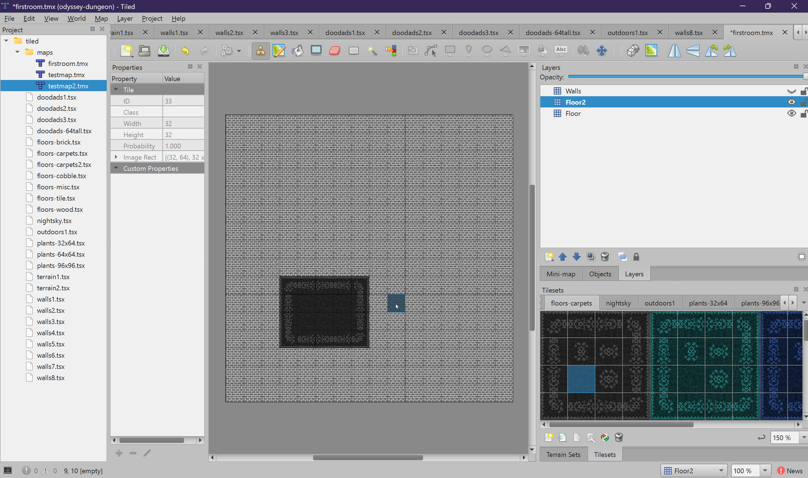
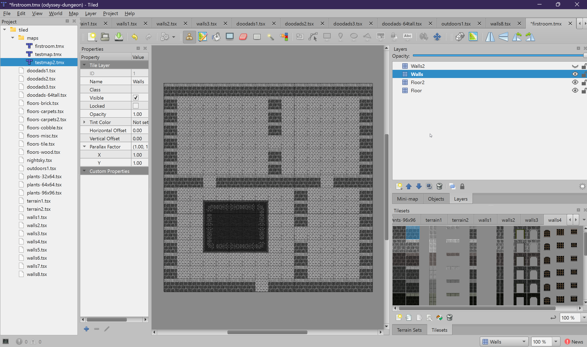
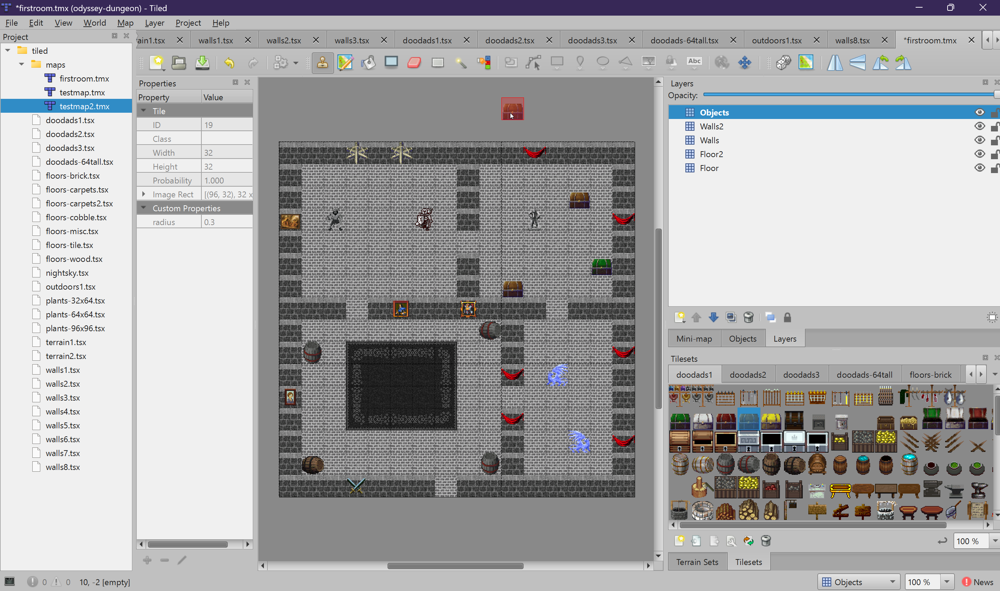
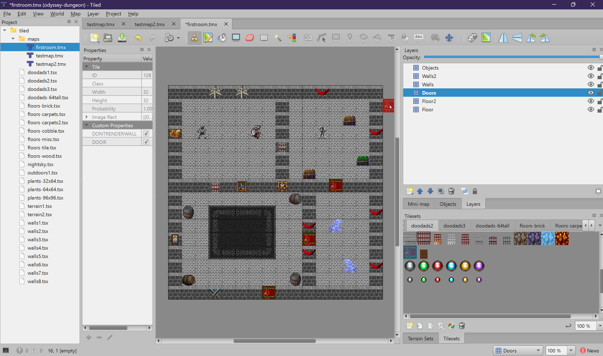
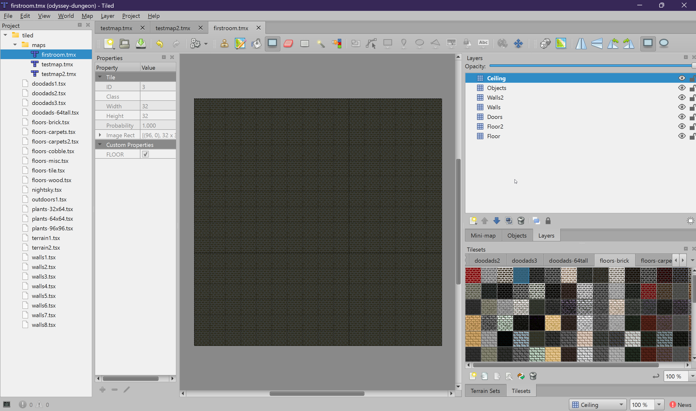

Tile Layers
Tile layers are grid-based layers where you paint tiles. The game engine converts them into 3D geometry.
Each tile you place on a tile layer becomes a piece of 3D geometry in the game world — a floor quad, a wall cube, a billboard sprite, or a door. This chapter covers every tile layer the engine recognizes.
Floor
The Floor layer defines the base ground surface of your map. Every tile placed on
this layer is rendered as a flat horizontal quad at ground level (Y = 0) in the 3D world.
How It Works
- Each tile becomes a 1x1 unit flat square on the ground
- The tile's texture is mapped onto the quad
- Empty cells (no tile) have no floor — players would see through to the void below
- All floor tiles on the map are combined into a single optimized mesh for performance
Tips
- Fill the entire walkable area with floor tiles — any gap will be a hole in the ground
- You can use the Bucket Fill tool (
F) to quickly fill large areas - Floor tiles do not block movement; they are purely visual
- Mix tiles from different floor tilesets for variety (brick paths through grass, etc.)

Floor2
The Floor2 layer is an overlay that renders slightly above the base Floor layer.
Use it for decorative details that sit on top of the ground — carpets, rugs, path markings,
blood splatters, or decorative patterns.
How It Works
- Rendered at Y = 0.001 (a tiny offset above the Floor layer)
- This offset prevents z-fighting (flickering) between the two floor layers
- Floor2 tiles support transparency — only the painted pixels show, the rest is see-through
- Like Floor, all Floor2 tiles are combined into one optimized mesh
Tips
- Only place tiles where you want the overlay — leave everything else empty
- Great for adding visual interest without replacing the base floor
- Use carpet tiles from
floors-carpets.tsxfor rug placement

Walls
The Walls layer defines solid, blocking walls. Each wall tile is rendered as a
3D cube with four textured vertical faces (no top or bottom). Walls block player and monster movement.
How It Works
- Each wall tile becomes a cube that extends from Y = -h to Y = +h (where h = wall height, default 1)
- For the default height of 1, the cube spans 2 world units tall (from -1 to +1)
- The tile's texture is applied to all four visible faces (north, south, east, west)
- Walls are the primary collision layer — nothing can walk through a wall tile
- Wall height can be overridden regionally using the WallHeight object layer
Layout Tips
- Walls are placed on the same grid as floors. A tile is either a floor or a wall, not both.
- Leave gaps in the wall perimeter for doorways (then place door tiles on the
Doorslayer) - Thick walls (multiple tiles wide) look more realistic than single-tile walls
- The pathfinding system uses the Walls layer to determine walkable areas for monsters

Walls2
The Walls2 tile layer is an overlay for wall decorations and details. Tiles placed
on this layer are rendered on top of existing geometry — perfect for torches, sconces,
wall-mounted signs, shelves, or decorative trim. Walls2 tiles do not block movement.
How It Works
- Rendered similarly to Walls but slightly inset (offset 0.01 toward the tile center) to layer over the base wall
- By default, all four faces are rendered
- You can control which faces are visible using the
Walls2object layer (see Advanced: Walls2 Direction) - The tile height depends on the tileset sprite dimensions — taller sprites get taller faces
- Uses alpha blending, so transparent areas of the tile texture are see-through
Tips
- Place Walls2 tiles at the same position as a Walls tile to overlay the decoration
- Use the Walls2 object layer to restrict rendering to just one face (e.g., only the east face for a wall-mounted torch)
- Walls2 tiles do not block movement and are not used for collision
Objects
The Objects layer is for placing billboard sprites — 2D images that are
rendered as vertical quads in the 3D world and always face the camera. Trees, barrels, furniture,
signs, crates, and other decorations all go on this layer.
How It Works
- Each tile becomes a billboard sprite centered on the tile position
- Billboards automatically rotate to face the camera as the player moves
- Taller sprites (64px, 96px) are scaled proportionally in the 3D world
- Sprites are rendered individually (not combined) since they need per-instance rotation
Special Tile Properties
Tiles on the Objects layer can have custom properties set on the tileset tile itself (not per-instance). These properties add gameplay behavior to every instance of that tile:
| Property | Type | Description |
|---|---|---|
radius |
float | Creates a circular collision zone around the object. Players and monsters cannot walk through. Example: 0.3 for a barrel, 0.5 for a tree. |
fx |
int | Particle effect ID to attach to this object (fire, smoke, sparkles). |
fx_ox, fx_oy, fx_oz |
float | Position offsets for the particle effect, relative to the object center. |
fx_scale |
float | Scale multiplier for the particle effect (default 1.0). |
light_intensity |
float | Attaches a point light to this object. Controls brightness/range. |
light_color |
string | Hex color for the light, e.g., #FF8800 for warm orange. |
light_ox, light_oy, light_oz |
float | Position offsets for the light source. |
light_flicker |
bool | Enables a flickering effect (for torches, candles, campfires). |

radius,
fx, or light_*), you must submit the modified tileset files
to Beebable for integration.
Doors
The Doors layer is where you place door and gate tiles. These are special animated
tiles that open and close based on player proximity or lock conditions.
Door Types
There are two types of door tiles, distinguished by a boolean property on the tileset tile:
| Tile Property | Animation | Description |
|---|---|---|
DOOR = true |
Swings open | A swinging door that rotates around a hinge point. The hinge side is determined automatically by checking adjacent wall positions. |
GATE = true |
Rises up | A portcullis-style gate that slides vertically upward when opened. |
How Doors Work
- Doors render as two textured faces (front and back)
- Proximity trigger: Unlocked doors open automatically when a player comes within 2 tiles
- Open animation: Takes 0.675 seconds to fully open or close
- Passable threshold: The door becomes walkable when it is 70% open
- The engine detects the door's facing direction (north-south vs east-west) by checking adjacent walls
Locking Doors
Doors can be locked by covering them with a Locks object layer rectangle
(see Object Layers: Locks). Locked doors do not respond
to proximity — they require a key, guild membership, or a touchplate to open.
Gate Setup
Gates require a bit more work than swinging doors to look right. A gate tile on its own will appear as a floating portcullis with no surrounding frame. To make gates look correct:
- Add an archway tile on the Walls layer at the same position as the gate. The walls tilesets include archway tiles specifically designed for this — they frame the gate opening with a stone or brick arch. Without the archway, the gate will look out of place.
-
Add the wall-top tile on the Walls2 layer at the same position if the
wall height is 1 (the default). At height 1, the archway tile alone does not reach high
enough to fully frame the gate. Place the wall-top cap tile (the tile showing just the
top portion of the wall / battlements) on the
Walls2layer at the gate position to complete the top of the frame.

Ceiling
The Ceiling layer creates an overhead surface above the player. For indoor maps,
this gives the appearance of a ceiling. For outdoor maps, you might use sky tiles from
nightsky.tsx.
How It Works
- Ceiling tiles are rendered as flat quads at Y =
height * 2 - The
heightproperty is set on the layer itself (not on individual tiles) - Default height is 1 (ceiling at Y = 2), minimum is 1
- For taller rooms (e.g., cathedral), set height to 2 or more
Setting the Ceiling Height
- Select the
Ceilinglayer in the Layers panel - Look at the Properties panel (it should show layer properties)
- Click the + button to add a custom property
- Name it
height, typeint, and set the value

Roof (Tile Layer)
The Roof tile layer provides the texture for roof geometry. Paint tiles where
you want the roof surface to appear. The actual 3D roof shape (slope, angle, hip vs gable) is
defined by the Roof object layer (see Advanced: Roofs).
How It Works
- The tile texture is applied to the generated roof slope geometry
- This layer alone does nothing — it must be paired with a Roof object layer
- Paint tiles over the entire area covered by the roof region
Summary
Tile layers form the visual and physical foundation of your map. The Floor and
Walls layers are the minimum requirement. Add Objects for decoration,
Doors for interactive doorways, Ceiling for indoor areas, and
Floor2 and Walls2 for extra visual detail.
Next, we will cover object layers — the invisible zones that define game logic like warps, monster spawns, and locked doors.